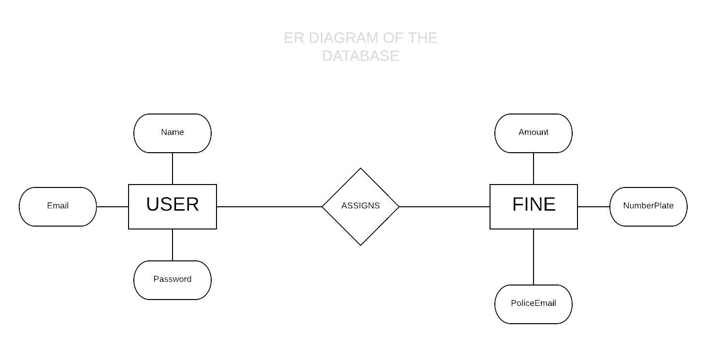
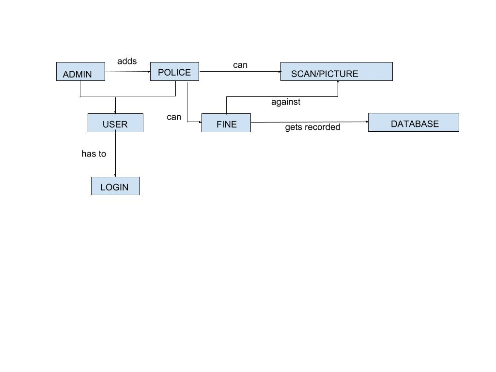
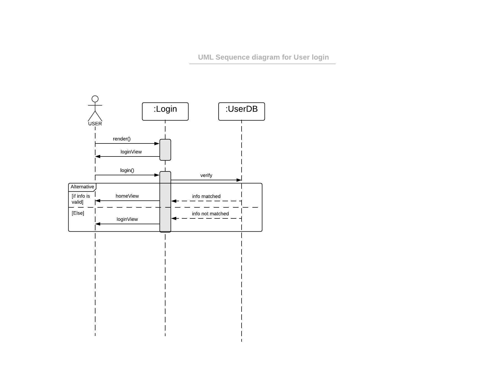
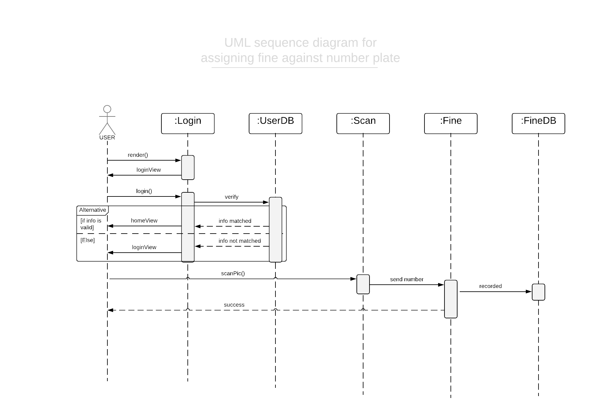

This document provides an outline for the software structure and design. Using this document the developers will be able to understand the client requirements. This document also provides an overview of the database schema, architectural patterns followed and technologies that are used by the system.
“Traffic Police” application will use the architectural style known as MVC . The Model-View-Controller (MVC) is an architectural design that divides an application into three components: the model, the view and the controller.
We will be using Sqlite for the database with the folowing entitity and attributes:


Below we describe the responsibilities of each of the classes in a single line:
| Name | Responsibility |
| User | Superclass for both admin and police. Contains their common information |
| Admin | Can add new police to the application. And monitor them |
| Police | Takes picture/scans number plate of cars and assigns fine against the designated number plate |
| Login | Authorizes user with credentials that match the database |
| Scan | Detects the number from number plates |
| Fine | Assigns fine chosen by the police against the number plate |
This section will list the possible sequence of actions that we anticipate the system will need to perform in order to accomplish a task it is designed to do. We list a few UML Sequence Diagrams that will help the reader understand what's going on under the hood.
 